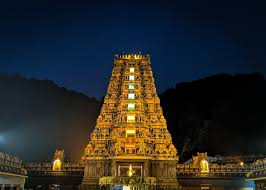

These are the tourist palces must visit in Vijayawada
Kanaka Durga Temple

The temple of Kanaka Durga the Goddess of power, riches and benevolence and the presiding deity of Vijayawada, is thronged by lakhs of pilgrims for worship during the “Navarathri” festival which is celebrated with Religious fervor, pomp and festivity. The ancient temple of Kanaka Durga , a top the Indrakeeladri hill on the banks of the Sacred river Krishna in Vijayawada, abounds with legends of historical interest.
The temple of Kanaka Durga the Goddess of power, riches and benevolence and the presiding deity of Vijayawada, is thronged by lakhs of pilgrims for worship during the “Navarathri” festival which is celebrated with Religious fervor, pomp and festivity. The ancient temple of Kanaka Durga , a top the Indrakeeladri hill on the banks of the Sacred river Krishna in Vijayawada, abounds with legends of historical interest.
Prakasam Barrage
Andhra Pradesh largely owes its rich agriculture to the Prakasam Barrage as the project facilitated the irrigation of large tracts of farmland. The Barrage provides views of the lake. It has become a tourist attraction of Vijayawada. On 13th Feb-2019 Andhra Pradesh chief minister Nara Chandrababu Naidu laid foundation[3] to construct a new barrage named Vykuntapuram Barrage on the Krishna River nearly 25 km upstream of Prakasam Barrage. The designed maximum water level is 22.13 m msl whereas the full reservoir level is 17.39 m msl with a scope to enhance the live water storage by increasing the gates height by 4.74 m height to enable the back waters reach the toe of the Pulichinthala Dam at 20 m msl for pumping water into the Pulichinthala reservoir.[1] The maximum flood flow experienced at the barrage was 1.11 million cusecs at 20.97 m msl on 5 October 2009.[1] During the severe floods in September 2024, the peak flood flow reached 1.06 million cusecs at the barrage against the designed flow of 1.19 million cusecs.
Bhavani Island
Bhavani Island situated in the midst of the Krishna River, at Vijayawada. It is located at the upstream of Prakasam Barrage and is considered one of the largest river islands in India[citation needed], with an area of 133 acres (54 ha).[1] It has a robotic dinosaur park, garden maze, mirror maze, golf and badminton simulator, cycling, etc.
APTDC has taken initiatives to develop the place into a tourist spot. One such initiative is Shilparamam, an arts and crafts village project. It is also helpful for local artisans such as Kondapalli toy makers, weavers etc.[3][4] APTDC has developed infrastructure on Bhavani Island to attract many tourists, which include sporting activities, resorts, rural museum, Berm Park, rope-way etc.
Undavalli Caves
The Undavalli Caves are monolithic Indian rock-cut architecture, located in Guntur district in the Indian state of Andhra Pradesh. The caves are located south west of Vijayawada. It is one of the centrally protected Monuments of National Importance.
The Undavalli caves are carved in the Gupta style of rock-cut architecture, dated back to the 4th-5th century CE. Most Gupta emperors were Vaishnavas; Many sculptures of the deity Narasimha, as well as other legends of Vishnu and from the text Ramayana are featured in the caves. These are associated with the Vishnukundina kings of 420–620 CE. These caves are dedicated to Ananta Padmanabha, a form of Vishnu laying upon Shesha. Later Jain and Buddhist monks used these caves as rest houses.